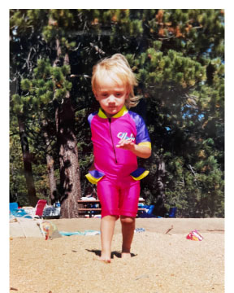
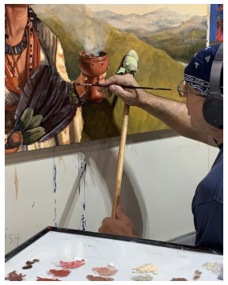
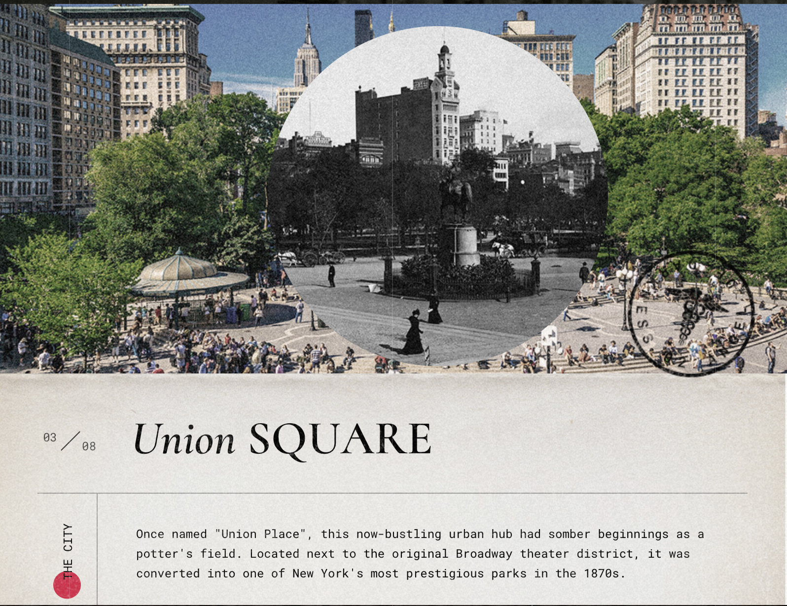

Family Photos tell a Story
February 11, 2021
This is an image of me as a child, at the beach in Northern California. What makes it interesting
is the context clues you use to figure out the location, the year, and the state of opinions in areas
like environmental awareness. The pine trees inform the user the beach is not a Southern California,
or more broadly tropical location, but rather a beach dropped in the middle of a forest, also known
as Lake Tahoe. Additionally, the vibrant, neon pink, purple, and yellow bodysuit tells viewers this
was influenced, or maybe even set in the 1990s. Lastly, the sand around me, with a plastic cup and
chairs and towels askew gleams an insight into the other visitors of the beach. This relates to my
collection, as it’s an outfit inspired by and from the 1990’s, as worn by my family and myself. It
tells a story about my mother, most of all, who dressed as at this young age, but it also tells the
story of the 1990’s and the time frame in which I grew up and did not care what others thought of my clothes.

Sammi Rowen, 2021

Jacob Ortega, 2021
This is an image of Jacob’s father, a talented artist and painter in the middle of his craft.
He is planning on juxtaposing images of his father and his work with images of himself and his
digitized work. This image is interesting for many reasons, including the complexity of the painting,
the color choices, and the shades and colors chosen for his work. However, I think the content outside
of the painting is even more interesting, as we see how Jacob’s father steadies his hand for minute
details (something we don’t see often in digital work), the blue paint dripping and dried onto the wall, a
nd the paint globs next to him where he pulls colors from. The most obvious aspect in this image is the
painting, the finalized product, but it is the process--the headphones, the bandana, the paint spills,
that tell the process behind his work and make this image interesting.
What makes a Website an Experience?
February 4, 2021
This website, explores New York in 1897 and compares it to New York Present day, mixing
multi-media forms, images, videos and music, navigational elements, maps, and an opportunity
to share your postcard with friends (and spread their message and website further!). This site
truly is an immersive experience and extremely interactive, making it much more fun and impactful
than a site that would present still images and blocks of text.
There are numerous ways to travel through the site, from scrolling to pressing a next/previous button
through each location, helping the user traverse the site but still feel like they are creating and owning
their experience. My favorite aspect were the images of today, that when hovered over, showed what the site in the
picture would have looked like in 1897, like in the image below of Union Square.
Lastly, I also enjoyed the typography, which used various weights and styles and was presented with animations
and movement, a small detail that only increased the effectiveness and interest of the website.

Overlays
January 28, 2021
Overlays can be frustrating for users, specifically if there is not an explicit cancel
button or that button is not easily accessible. For instance, buttons that imply they
will actually submit the form, the closable ‘x’ being located in the top right corner
of the window rather than the overlay, or no cancel button and the design intention of
just clicking outside the overlay, all pose problems for users and ruin their experience.
In all of these scenarios, the user freezes, unaware or unable to return to their intended
purpose and oftentimes simply leaves the page and stops the action.
Overlays that appear only when the user is about to navigate away from the site can mitigate
some issues; however, I find that sometimes I want to open a new tab, for research or comparison,
and easily become annoyed by the overlay, which was designed with good intentions but still disrupts
my intentions (especially when the overlay appears repeatedly despite canceling it already).
Thus, it is important to be cognizant of the placement of the close button, the uses and reasons
behind your overlays, and the reactions and feelings your users are going to gain from this overlay.
As the article states, some overlays are helpful (like cautionary messages before preceding or user-initiated
overlays) and others can be more of a hindrance and annoyance to users. Thus, we must proceed with caution and
really think about the reasons behind an overlay.
Form Design
January 21, 2021
The twenty tips to boost usability in form design described many of the problems I encounter
when signing up for a new website or entering in sensitive information for activities like flights
and bookings. The three scenarios that most frustrate me as a user are the hiding of the password I
just entered, the autocompletion or default value option, and pressing the reset button instead of submit.
In all of these scenarios, the design practice usually results in me, as a user, having to re-enter in
my information. I always double check my information is correct, which usually requires me to retype my
password slowly (looking at each letter I press), or in the case of autocompletion, it usually requires
me retyping in my name as I use a nickname for some accounts and have to use my real name for others,
which the computer does not decipher between. Many people likely do not encounter this second issue,
much like the issue surrounding color inclusion and colorblind users, which illustrates the importance
of testing and feedback for discovering issues we may not initially recognize as designers.